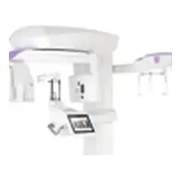
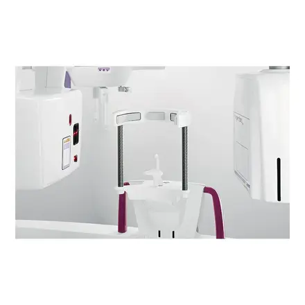
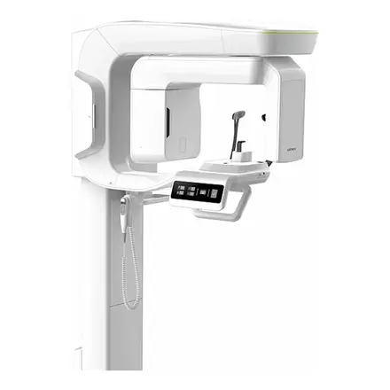

MyRay · ИталияMyRay Hyperion X9 CB3D 11x13 Ceph TitaniumДентальный цифровой 3D-томограф с цефалостатом, 3 в 1, FOV 11x13
3 592 300 ₽в лизинг от 116 900 ₽/мес

Фото уточняем у производителяТомографы 3D
Система 3 в 1. HYPERION X9 Pro - это модель будущего: инновационная 3D-технология и широкий спектр 2D-исследований.
На выходе вы получаете изображения высокой четкости. Аппарат соответствует всем современным требованиям, а ввести его в работу сможет любой стоматолог. Супер-HD изображение дает стоматологу возможность не сомневаться в правильности диагноза, а встроенные функции обозначат необходимые процедуры.
Управление станет удобным за счет комфортного и интуитивно понятного сенсорного управления.
Возможна индивидуальная настройка аппарата под все свои потребности.
Hyperion X9 Pro - это надежность, мощность, и при этом легкость.
Особенности:
Полностью настраиваемый модуль;
Высокое качество полученного изображения;
Комфортное использование и эргономика;
Постоянная связь.
MRT
Вы сможете создать многослойный панорамный рентген-снимок, а количество 2D-программ удовлетворит даже самого требовательного специалиста. Снимки имеют высокий уровень детализации, что даст стоматологу возможность полноценно изучить самые “сложные зоны”: суставы и пазухи. Доза определяется автоматически в зависимости от выбранной области.
Усовершенствованная система диагностики
Hyperion X9 Pro соответствует всем требованиям:
Сканирование не занимает много времени;
Сниженная доза излучения;
Занимает мало места.
SUPERHD CB3D
Для того, чтобы создать 360 градусную визуализацию необходима лишь малая доза излучения. При этом полученное разрешение точно порадует стоматолога: 75 мкм (на зубной ряд). За счет использования функции XF поле обзора расширяется.
Все вышеперечисленное позволит осуществить полноценную диагностику.
Инновационность, мощность, универсальность
Hyperion X9 pro - это новые возможности. Конфигурация идеально подходит для всех ваших диагностических задач и требований.
Гибкость и универсальность. Аппарат полностью настраивается именно вами. В считанные секунды вы можете перейти от простой версии к продвинутой, сэкономив при этом время.
Платформа сама адаптируется к среде и вашим потребностям. Встроенный в прибор PAN / CEPH датчик легко перемещается, а установить его можно с двух сторон. Hyperion X9 Pro - это современная компактная мощная система, позволяющая проводить качественные 2D и 3D-исследования.
Главное:
Конфигурация легко подстраивается под вас;
2D датчик свободно перемещается;
Система 3 в 1.
Устройство превзойдет все ожидания. Вы получите превосходные 3D-детали каждого изображения.
С помощью 3D-технологий визуализация поднимется на абсолютно новый уровень, что позволит точно поставить верный диагноз. Аппарат имеет широкий спектр полей обзора (от 4 х 4 до 13 х 16 см). Это делает инструмент идеальным для тех случаев, когда необходимо удовлетворить все потребности: начиная от анализа зубных структур и заканчивая исследованием суставов и ЛОР-областей.
Мульти FOV от 4 x 4 до 13 x 16 см;
Модернизированный генератор;
Чрезвычайно высокое разрешение (до 68 мкм);
Быстрое сканирование CB3D (до 3,4 секунд);
Малая доза облучения.
ВИДЕО МОНТАЖА
ДВОЙНОЕ СКАНИРОВАНИЕ С РАЗРЕШЕНИЕМ 75 МКМ
FOV имеет диаметр 10 сантиметров, разрешение достигает 75 мкм. Это позволяет исследовать с помощью устройства весь зубной ряд, исследуя костные структуры. Идеально подходит для исследований с целью установки имплантатов. Уже предусмотрены шаблоны.
ВОЗДУШНЫЕ ПУТИ
FOV имеет размер 13 x 16, что гарантирует детальный и качественный рентген дыхательных путей без необходимости дополнительного обследования. Это позволит определить самые ранние признаки апноэ и причина сужения.
Достигните нового уровня
Это простой и при этом универсальный технологичный аппарат. Это совмещенные в одном инструменте 3D-технологии, которые выведут клинику на новый уровень.
Лучшая эволюция 3D-диагностики. Hyperion X9 pro оснащен генератором, который позволяет получить самые лучшие результаты при низкой дозе излучения в течении малого времени. Встроенный сенсор позволяет получить изображения наилучшего качества.
Технология поможет вам в том, чтобы добиться необыкновенных результатов. Разрешение достигает 68 мкм.
Это:
Новый, усовершенствованный генератор;
3D-датчик с высокой чувствительностью;
360-градусное сканирование.
Подробно:
Сканирование на 360 градусов за маленькое количество времени.
Благодаря этому формату сканирования количество артефактов значительно снизится. Hyperion X9 pro при этом обладает высокой скоростью, что позволяет получить качественный результат за маленькое количество времени.
При этом применяется маленькая доза излучения. Hyperion X9 pro - это качество, подробный результат, и быстрая постановка диагноза.
Инновационный генератор
Фокусное пятно имеет размер 0,5 миллиметров, что гарантирует оптимизированную экспозицию. Технология импульсной эмиссии ощутимо снижает дозу излучения.
Большая 3D-панель
Вы можете сами легко управлять исследованием за счет сверхчувствительной панели, поставив диагноз в абсолютно любое время.
СуперHD-ДИАГНОЗ
MultiFOV и высокое разрешение: прекрасные 3D-изображения для всех ваших потребностей в радиологии.
Большой диапазон FOV удовлетворит требования всех: как имплантологов, так и специалистов по эндодонтии. Имеется 3 режима, который подойдут каждому. Стоматолог сможет провести обследования в зависимости от диагностических потребностей.
Режимы:
Faster. Применяется низкая доза излучения и на выходе получается улучшенная макроструктура результата.
Standart. Первичная диагностика. Лучший баланс
между дозой и качеством.
SuperHD Исключительный уровень детализации без компромиссов. Идеально подходит для анализа микроструктуры.
Smart CB3D.
Основные особенности:
MultiFOV
Доступно 3 готовых протокола
Стоматология и оториноларингология
Имплантология и ортодонтия
Ухо, нос, горло и носовые пазухи
Отлично подходит для исследования зубной дуги. Вы можете сами выбирать, что вам необходимо сканировать: доступны зоны от лобной до нижней челюсти. Это позволит снизить дозу излучения.
Самое высокое разрешение, доступное на рынке (68 мкм). Это гарантия точности всех деталей. Благодаря тому, что используется сверхбыстрое сканирование (3,6 секунд), доза излучения уменьшена.
FOV 10x8 сантиметров
Аппарат демонстрирует весь зубной ряд включая корни дальних моляров. Для этого необходимо всего лишь 6,4 секунды для точности 75 мкм.
Расширьте свой взгляд: исследуйте место от нижней зубной дуги до верхней пазухи, поставив точный и надежный диагноз.
Доступны:
Лор-обследования
• Ухо: 7 x 6 см (XF)
• Носовая и гайморовая пазухи: 13 х 8 см.
• Рот и горло: 13 x 10 см.
• Верхние дыхательные пути (совместно): 13 x 16 см.
Стоматологическое обследование
• Зубы: 13 x 16 см.
• Восходящие ветви нижней челюсти: 13 x 10 см.
• Скуловые дуги и пазухи: 13 х 8 см.
• Верхнечелюстные пазухи: 10 х 10 см.
• Височно-нижнечелюстной сустав: 7 x 6 см (XF)
• Зубы: 4 х 4 см (XF)
Базовый режим
• Полный зубной ряд, взрослый: 10 x 8 см.
• Одиночная зубная дуга, взрослый: 10 x 6 см.
• Полный зубной ряд, ребенок: 8 x 8 см.
• Одиночная зубная дуга, ребенок: 8 x 6 см.
• Передний зубной ряд: 6 x 6 см.
3D КЛИНИЧЕСКИЕ СЛУЧАИ
Ортодонтические аппликации
FOV имеет диаметр 10 сантиметров, что идеально для взрослого, имеющего среднее телосложение. Это позволит исследование расстояние между третьими молярами слева и справа, включая соответствующие корни, альвеолярный отросток и окружающую кость.
Уменьшение FOV рекомендовано в тех случаях, когда необходимо снизить дозу излучения. Помните, что важно определить положение (вестибулярное или небное).Это возможно только при 3D-анализе даже при очень низкой дозе с помощью QuickScan.
FOV 13 x 16 см предназначается для оценки состояния верхних дыхательных путей. Многообразие функций позволит завершить все обследования, включая в том числе лор-проблемы.
Расширенное полное планирование имплантации
Вы можете разместить все необходимое в режиме реального времени на 3D-модели, объедините имеющуюся информацию с данными STL, и далее уже определит окончательный результат.
Благодаря тому, что используются передовые инструменты для планирования имплантации, вы сможете обеспечить клиенту безопасную работу и точное расстояние от анатомических структур.
Объемный анализ
Функция предназначена для оценки носовых пазух. Это позволяет заранее планировать все вмешательства, чтобы в дальнейшем провести безопасную процедуры. Вы можете оставлять пометки прямо на 3D-модели для оценки отношения.
FOV имеет форматы 13 x 8 сантиметров и 13 x 10 сантиметров, что позволяет сделать аппарат идеальным инструментом для установки скуловых имплантатов. Та как диаметр составляет 13 сантиметров, разрезы не будут проблемой.
Эндодонтия
Эндодонтическое обследование выходит на новый уровень, так как теперь лечение пройдет без лишних проблем. Разрешение составляет 68 мкм, что выводит диагноз на новый уровень.
Исследуйте внутреннее и среднее ухо
Вид на внутреннее и среднее ухо
FOV 7 x 6 см при 68 мкм обеспечивает четкий и подробный обзор всех структур
внутреннего и среднего уха, включая полукружный канал и цепочку слуховых косточек.
Увидьте каждую деталь
Система MultiPan обеспечивает максимальный результат за счет высокой четкости и видимости абсолютно всех деталей.
Так как датчик CMOS относится к новому поколению, он гарантирует проявление изображений высокой четкости, при использовании низкой дозы облучения. Панорамный режим снижает перекрытие, что позволяет увидеть структуры четко и надежно. На выбор стоматологу доступно множество режимов и возможность самостоятельно выбирать фокальные слои для получения более детализированного изображения.
Для того, чтобы оптимизировать процесс сканирования, каждое изображение имеет выделенную траекторию.
Hyperion X9 Pro - это точные детали, но при этом оптимальная производительность.
Особенности:
Встроенные 2D-датчик
Высокая ортогональность
Переменная коллимация
Широкий выбор фокальных слоев
Фильтры PiE (Panoramic Image Enhancer)
HD MULTIPAN
Hyperion X9 pro обеспечивает четкие и подробные панорамные снимки. За одно сканирование с одинаковым временем воздействия MultiPAN генерирует 5 различных фокальных слоев. Вам остается лишь выбрать тот, который наиболее подойдет.
РАСШИРЕННАЯ КИНЕМАТИКА
Hyperion X9 PRO имеет самые продвинутые технологии визуализации. Аппарат оборудован синхронизированной кинематикой и способен осуществлять синхронные поступательные движения. Фокальное пятно всегда соответствует морфологии пациента.
Сравнение Hyperion X9 PRO с конкурентами:
Hyperion X9 PRO имеет высокие возможности увеличения, а также возможность осуществлять 2 синхронных движения.
Конкуренты самого высокого уровня предлагают неравномерное увеличение и только 1 синхронное движение.
Откройте для себя новый мир
Оптимизированные 2D-программы для непревзойденного панорамного и цефалометрического изображения.
Аппарат обеспечивает оптимальную 2D-траекторию. Вы сможете исследовать ортогональные выступы, и сосредоточиться на зубных коронках. Возможно сегментировать область зубных рядов и ограничить зону сканирования, чтобы снизить дозу облучения.
Вы можете осуществлять обследования височно-нижнечелюстного суставы как в переднем отделе, так и создавать латеральные проекции под разными углами. Исследуйте даже гайморовые пазухи и верхние дыхательные пути, чтобы спланировать операцию. QuickPAN функция позволяет минимизировать время сканирования для более быстрых процедур.
Широкий диагностический диапазон.
Особенности:
Ортогональный панорамный рентгеновский снимок HD-качества
QuickPAN
Сегментация интересующих областей
Возможность SuperHD
Многоугольные ВНЧС
PAN
ПАНОРАМНЫЕ ОБСЛЕДОВАНИЯ
• Панорамный рентген HD-качества и возможность QuickPAN
• Полный и уменьшенный панорамный рентген для детей
• Ортогональная проекция на весь зубной ряд
(уменьшает перекрытие зубных коронок)
• Сегменты панорамного рентгена и зубных рядов возможно исследовать с помощью прогнозов
• Прикусные снимки в 4 сегментах.
TMJ
ОБСЛЕДОВАНИЕ ВНЧС
• Латерально-латеральная проекция обоих ВНЧС
• Задне-передняя проекция обоих ВНЧС
• Латеро-латеральная проекция под разными углами (x3) одиночного ВНЧС
• Задне-передняя проекция под разными углами (x3) одного ВНЧС
SIN
ОБСЛЕДОВАНИЕ ДВИЖЕНИЙ ВЕРХНЕЙ ЧЕЛЮСТИ
• Вид на верхнечелюстные пазухи спереди или слева / справа
Каждая перспектива оптимизирована
Высокая производительность, сверхбыстрое сканирование и полный выбор цефалометрических проекций. Выберите обследование, которое наилучшим образом соответствует вашим диагностическим требованиям.
Hyperion X9 pro имеет собственный модуль телерадиографии, а цефалометрическое плечо - это самый настоящий инженерный шедевр.
На сегодня аппарат является одним из самых компактных. Вы можете осуществлять ремонт как сзади, так и слева.
Датчик PAN / CEPH последнего поколения совмещен с модернизированным генератором, который гарантирует отличную производительность в любых ситуациях. Выберите режим, который лучше всего подходит под ваши потребности.
Особенности:
Минимальная доза излучения
Сверхбыстрое сканирование
Большой выбор режимов FOV
Переносной датчик PAN / CEPH
Доступен двойной датчик
CEPH
ТЕЛЕРАДИОГРАФИЧЕСКИЕ ОБСЛЕДОВАНИЯ
• Латерально-латеральная проекция с возможностью выбора FOV
• Латерально-боковая проекция с уменьшенной высота, что снижает дозу
• Проекция FULL CEPH со сниженным влиянием на щитовидную железу
• Передне-задняя или задне-передняя проекция
• (SMV) проекция
Вы можете самостоятельно выбрать область сканирования. Коллиматор уже интегрирован, что гарантирует минимальный след.
ПОЛНОЦЕННЫЙ CEPH
Hyperion X9 pro отлично подходит и для детей, и для взрослых. CEPH снижает воздействие на щитовидную железу, и позволяет избежать контакта с плечами.
Стоматологические панорамные рентгенограммы
1. Минимизирует перекрытие соседних зубов и обеспечивает лучший анализ.
2. Быстрый панорамный рентген: малая доза и уменьшенная
время сканирования, что идеально подходит для первичных исследований.
3. Панорамный снимок при работе с детьми: настраиваемая экспозиция и оптимизированные параметры.
4. Полный зубной ряд разделен на отделы: локальные исследования с
выбираемая сегментация для ограничения радио-доз.
5. Прикусные выступы, ограниченные коронками: высокое разрешение и низкая доза излучения, удобная альтернатива внутриротовой визуализации, что особо подойдет для пациентов со рвотным рефлексом.
Внеротовая томография
1. Височно-нижнечелюстные суставы: правые и левые, с открытым или закрытым ртом, латерально-латеральные и задне-передние проекции с многоугольной съемкой.
2. Верхнечелюстные пазухи: вид спереди или слева / сбоку, оптимальная траектория.
Телерадиография
1. Латеро-латеральная часть: работа с костными структурами, исследование мягких тканей.
2. Переднезадний отдел: определение асимметрии и лечение неправильного прикуса.
3. Вершинный отдел: для анализа носовых полостей, решетчатых воздушных ячеек и
клиновидных пазух.
4. Область запястья: оценка роста.
ОПТИМИЗИРОВАННАЯ РАБОТА
Hyperion X9 pro оптимизирует вашу работу, адаптируется к вашим потребностям и позволяет сосредоточиться на том, что действительно важно: на постановке диагноза.
Hyperion X9 pro - это расширенные функции и инструменты для улучшения рабочего процесса. Интуитивно понятный интерфейс помогает оператору шаг за шагом при проведении процедуры.
Вы можете увидеть 2D-изображение на бортовой панели управления или с помощью приложения на ОС IOS.
MRT-технология позволяет оператору получить изображения без установки параметров экспозиции, так как устройство имеет возможность автоматически адаптироваться ко всем необходимым физиологическим особенностям.
Focus-Free - это функция, которая автоматически регулирует фокальный слой.
Улучшайте свою работу совместно с Hyperion.
Особенности:
Технология MRT
Многоплатформенная панель управления
Управляемый рабочий процесс
Панорама без фокуса
Позиционирование с помощью 3D Free-FOV
iPAD-контроль
Hyperion X9 pro имеет дружелюбный интерфейс, который доступен каждому на IPad. За несколько простых шагов вы можете выбрать и настроить наиболее подходящий режим с учетом всех требований.
Легкий интерфейс для персонального компьютера
Многоплатформенная панель управления упрощает и дает немедленный доступ ко всем функциям устройства. Интерфейс поможет вам шаг за шагом. Вы сможете выбрать режим и настроить все необходимые функции.
Сенсорная 10-ти дюймовая панель управления
Обеспечьте себе легкую работу и отдых. Hyperion X9 pro - это возможность заранее выбрать все необходимое. Начиная от режима и заканчивая самыми мельчайшими деталями.
ТЕХНОЛОГИЯ НА СЛУЖБЕ БЛАГОПОЛУЧИЯ ПАЦИЕНТА
Предложите своим пациентам самые лучшие условия. Быстрое сканирование, низкая доза облучения и просто удобство это максимальный уровень комфорта.
Hyperion X9 pro позволяет также использовать специальное оборудование, предназначенное для людей с двигательными нарушениями.
С помощью приложения iRYS Viewer для iPad вы можете поделиться каждым этапом лечения с вашим пациентом. Более активное участие пациент ведет эффективности сотрудничества.
Обеспечьте клиенту заботу.
Эргономичное расположение
Быстрое сканирование
Малая доза излучения
Быстрый обмен данными
НАПРАВЛЯЕМОЕ И ЭФФЕКТИВНОЕ ПОЗИЦИОНИРОВАНИЕ
Позиционирование выполняется быстро и точно благодаря современной системе центровки с 4 проецирующими лазерными лучам. Подголовник имеет 7 точек крепления, что гарантирует устойчивость пациента и дает ему свободу передвижения.
СОБСТВЕННАЯ СИСТЕМА УПРАВЛЕНИЯ
Через систему Scout View вы сможете узнать все об необходимо области, пациент при этом будет находиться в расслабленном состоянии. Вам необходим лишь ПК, на котором возможно просмотреть все необходимое на низком облучении или же отрегулировать область сканирования. Это позволит найти нужную позицию, исключив повторное обследование.
СКАНИРОВАНИЕ БЕЗ БОЛЬШИХ ДОЗ
Благодаря расширенным протоколам QuickScan, которые доступны как для 2D-исследований, так и для 3D-съемки,вы сможете получить качественное изображение с помощью низкой дозы облучения.
Готовые протоколы являются идеальным инструментом для послеоперационного периода.
Надежная система iRYS
Лучшая платформа для 2D и 3D изображений.
Современный инструмент, оснащенный собственной полноценной программой для просмотра, обработки, и возможностью делиться полученными данными.
Одним щелчком мыши вы можете отправлять 2D и 3D изображения или же удаленно управлять процессом с помощью приложения. Вы можете поделиться результатами и процессом со своими пациентами и коллегами. iRYS - это платформа, отвечающая всем вашим диагностическим требованиям.
Настоящая эволюция.
Мульти-рабочий стол 2D / 3D
Имитация имплантата
Совместимость с программным обеспечением других ПО
Совместное использование с программой просмотра 2D и 3D изображений
iRYS Viewer подходит для iPad
ГОТОВЫЕ БИБЛИОТЕКИ
iRYS упрощает выбор и установку имплантатов за счет большой библиотеки. Вы сможете добавить собственные настройки за считанные минуты.
МНОГОПОЛЬЗОВАТЕЛЬСКИЙ 3D / 2D РЕЖИМЫ
Встроенное ПО для обработки 2D и 3D изображений. Система Multi-Desktop позволяет быстро просматривать различные 2D и 3D исследованием с реалистичным рендерингом и многоплоскостным панорамным анализом. Есть все необходимое для работы с пациентом.
Полный комплект инструментов для постановки диагноза
Простота и эффективность диагностики с помощью фильтров iRYS.
IRYS - передовая и надежная платформа, которая предоставляет набор инструментов для диагностики и планирование лечения, что гарантирует высокую эффективность процедур. Имеются фильтры для улучшения четкости изображения и уровня детализации, а также дополнительные функции для оценки костной ткани и анализа объема дыхательных путей.
Отличные диагностические инструменты.
Улучшенные фильтры изображений
PiE (усилитель панорамного изображения)
Оценка качества костной ткани
Оценка объема дыхательных путей
ОЦЕНКА КАЧЕСТВА КОСТНОЙ ТКАНИ
Чтобы лучше планировать операции воспользуйтесь преимуществами расширенного ПО iRYS. Используется шкала Misch для получения информации о месте для имплантации.
ИССЛЕДОВАНИЯ ОБЪЕМА ЛЕГКИХ
iRYS позволяет оценить объем верхних дыхательных путей в и исследовать возможные нарушения в ЛОР-области.
Эта функция также особенно полезна для планирования синус-лифтинга или операций со скуловыми имплантатов. Рекомендовано применять при лечении апноэ.
Усовершенствованные фильтры 2D PiE (Panoramic Image Enhancer) позволяют оптимизировать рендеринг 2D-изображений за счет автоматизированной оптимизации отображения анатомических областей.
3D SMART
Интеллектуальная система 3D SMART позволит насладиться качеством изображения без лишних артефактов. Вы можете применить эту функцию в абсолютно любую минуту.
Обменивайтесь данными
Инновационная и эффективная идея. Вы нашли платформу, которая идеально подойдет именно для вашего метода.
Насладитесь тем, что всегда будете на связи. Вы можете в любой момент исследовать результаты совместно с другими специалистами или с пациентом. Имеется удобный интерфейс, который позволит расширить возможности ведения пациентов и улучшить систему хранения.
Если случилась какая-либо поломка - достаточно лишь наличия интернета для ее автоматизированного устранения.
Будьте на связи всегда.
iRYS Viewer
DICOM совместимость
Поддержка в любую минуту
Легкая работа
Улучшите качество и эффективность своей работы. Осуществляйте мониторинг состояния пациента в течение реального времени.
Будьте постоянно на связи
Функции iRYS дает возможность в любой момент подключиться к файлам, а также совершить с ними все необходимые взаимодействия.
Подключите и сразу же используйте
На системе IOS уже доступны все необходимые приложения. С помощью них вы сможете в считанные секунды подготовить изображение и использовать его.
Всегда на связи
Программа постоянно обновляется и автоматические устраняет все возникшие проблемы. Возможна удаленная поддержка.
Технические особенности 3D-исследований:
Детекторная технология: аморфный кремний - CLS, используется осаждение (прямое)
Динамический диапазон 16 бит (65 535 уровней серого)
Среднее время сканирования 14.4 секунды
Возможно вращение на 360 и на 180 градусов
Размер вокселя: для 10x8 составляет 75 мкм, для 13x16 68 мкм
Рабочая область для 10x8 107x80 миллиметров (диаметр x высота), для 13x16 108x50 миллиметров (диаметр х высота)
FOV для 10x8: 6x6 - 8x6 - 8x8 - 10x6 - 10x8
FOV для 13x16: 6x6 - 8x6 - 8x8 - 10x6 - 10x8 10x10 - 13x8 - 13x10 - 13x16 4x4 - 7x6
Размер изображения: для 10x8 составляет 495 мегабайта, для 13x16 820 мегабайт;
Необходимо для сканирования (минимум): для 10x8 6.4 секунды, для 13x16 3.6 секунд;
Среднее время, необходимое для экспозиции: от 1.6 до 8 секунд в зависимости от режима;
Режим выравнивания пациента: метод Scout View
Формат изображения Эксклюзивное программное обеспечение iRYS и DICOM 3.0
Минимальное время, необходимое для рендеринга 15 секунд; в режиме реального времени при режиме 4x4.
Технические особенности 2D-исследований: панорама/цефалометрия
Детекторная технология: CMOS
Размер пикселя: 100 мкм
Цветовой диапазон: 14 бит, 16383 уровней серого;
Соотношение шума: от 74 Дб до 86 Дб;
Высота детектора 148 миллиметров/223 миллиметра;
Размер матрицы (максим.) 1470x2562/2155x2935;
Максимальный размер файла: 8 мегабайт/14 мегабайт;
Среднее время сканирования: 6-12.3 сек./3.3-9 сек.;
Разрешение изображения: PAN 6,3 (шаг пикселя 80 мкм)/CEPH 5,6 (90 мкм)
Формат изображения: TERF, 16 бит, DICOM
Выравнивание: используется 4 лазерных направляющих
Особенности рентгена:
Тип - постоянный потенциал;
Частота 100-180 кГц;
Тип непрерывный или импульсный;
Напряжение на аноде 2Д: 60 - 85 кВ | CB3D: 90 кВ (импульсный режим)
Анодный ток 2-16 мА
Время экспозиции 1 с - 18 с
Фокусное пятно 0,5 мм (IEC 60336)
Контроль экспозиции - автоматический
Технология распознавания - MRT
Компенсация абсорбции позвоночника - автоматическая
Конфигурация - модулируется в реальном времени во время рентгеновского облучения, выбирается автоматически или вручную с дискретным шагом.
Максимальная мощность42 Вт (1:20 при 85 кВ / 10 мА)
Собственная фильтрация 2D:> 2,5 мм Al экв. (при 85 кВ) | 3D: 6,5 мм Al экв. (при 90 кВ)
Встроенная защита от рентгеновского излучения сзади в соответствии с IEC60601-1-3
Размеры/PAN и CB3D/С телерадиографической рукояткой
Доступная рабочая область 1390 x 1140 мм / 1390 x 1800 мм
Размеры (ВxДxГ) 1515 x 1750 x 670 мм (база); 360 x 530 x 1030 мм (телерадиографическая штанга)
Высота 1660-2450 мм
Вес от 155 до 342 фунтов/от 175 до 385 фунтов
Примечание: возможно приобретение дополнительной опоры для пациентов на инвалидной коляске
Источник питания/Частота
Напряжение | Частота 115 - 240 В перем. Тока, ± 10% однофазное | 50/60 Гц ± 2 Гц
Максимальное напряжение 20 А при 115 В, 12 А при 240 В
В режиме ожидания потребляет 25 Вт
ПОДКЛЮЧЕНИЕ
Подключения LAN / Ethernet
Программное обеспечение MyRay iRYS и приложение для iPad
Поддерживаемые протоколы DICOM 3.0, TWAIN, VDDS
DICOM совместим с IHE: печать; хранение данных; рабочий список MPPS; получение запроса
Нажмите «Получить КП»: пришлём коммерческое предложение с ценой, сроком поставки и условиями. Или счёт, если цена на сайте вас устраивает.
По счёту для юрлица или в лизинг. Оплаты картой на сайте нет.
Привезём, смонтируем и запустим. Город и сроки уточняются.





 Хит
Хит
Адрес на сайте: /catalog/3d-i-2d-rentgen-apparaty/tomograf-dentalnyy-hyperion-x9-pro-160-180-mm-myray-cefla-s-c/